Enjoy exciting recreational destinations and discover places to stay around Bharatpur and Chitwan.
Kabilas Resort & Funpark is a recreational destination in Bharatpur offering a combination of accommodation, fun and outdoor activities. With its recreational facilities, water-based attractions and open surroundings, it is a destination for families and groups looking for a fun day out.
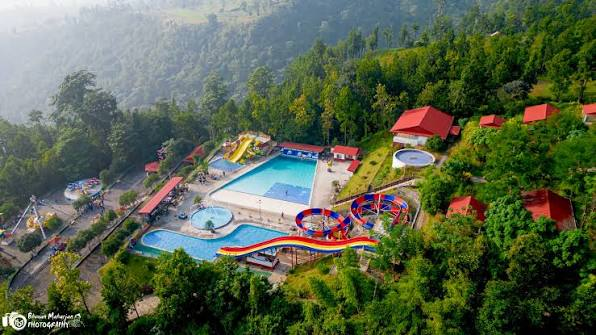
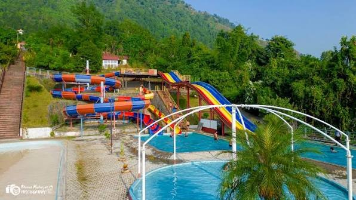
James World Fun Park in Lanku is an amusement destination in Bharatpur designed for entertainment and family recreation. Visitors can enjoy rides, games and recreational activities in a lively fun-park environment, making it a popular option for spending time with friends and family.
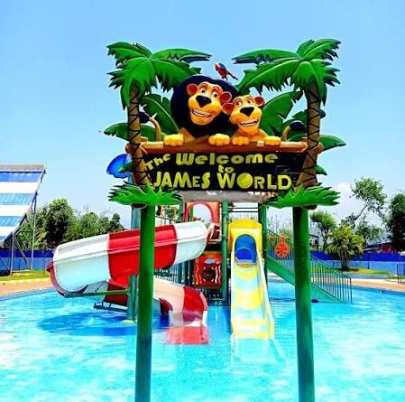
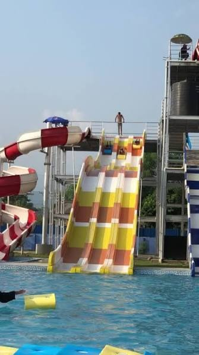
Dolphin Fun Park is a recreational venue in Bharatpur where visitors can enjoy entertainment, outdoor activities and time with family and friends. Its open recreational setting makes it another option for visitors looking for a relaxed and enjoyable day around Bharatpur.
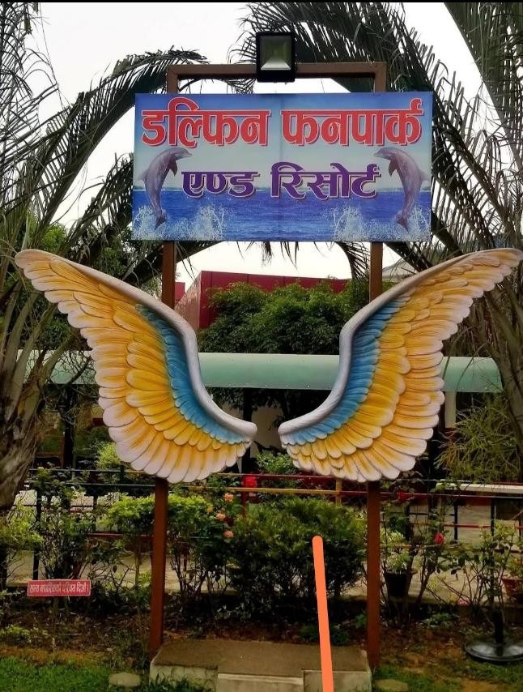
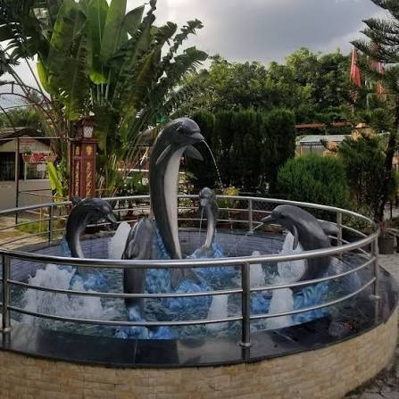
STAY IN CHITWAN
Located in Bharatpur, Vivanta Chitwan offers a comfortable stay for visitors exploring the city and surrounding attractions. Its location provides convenient access to Bharatpur's urban area, Narayani Riverside and other destinations around the city.
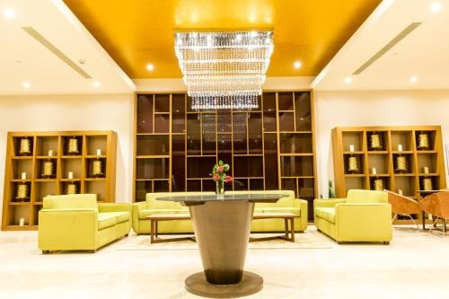
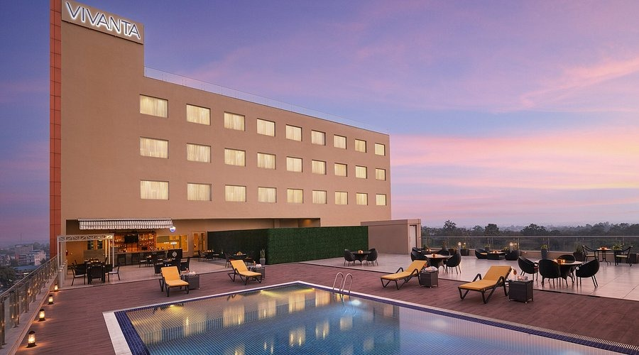
Green Park Chitwan is a resort in the Sauraha area, making it a convenient base for visitors exploring Chitwan's wildlife and jungle experiences. The resort provides a peaceful setting surrounded by the natural atmosphere of the Chitwan region.
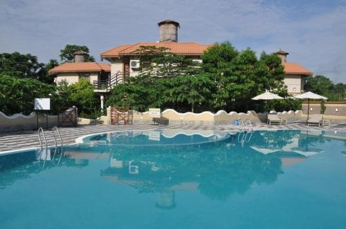
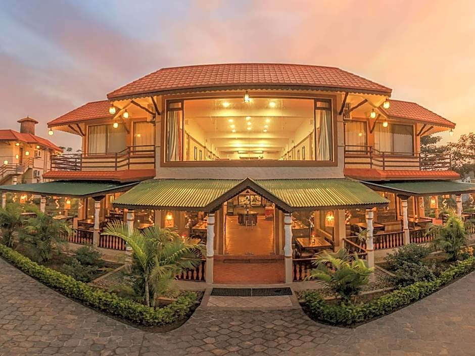
Meghauli Serai is a luxury safari resort located in the Meghauli area of Chitwan National Park. Surrounded by forests and rivers, it provides visitors with a comfortable base for experiencing the wildlife, nature and peaceful landscapes of western Chitwan.
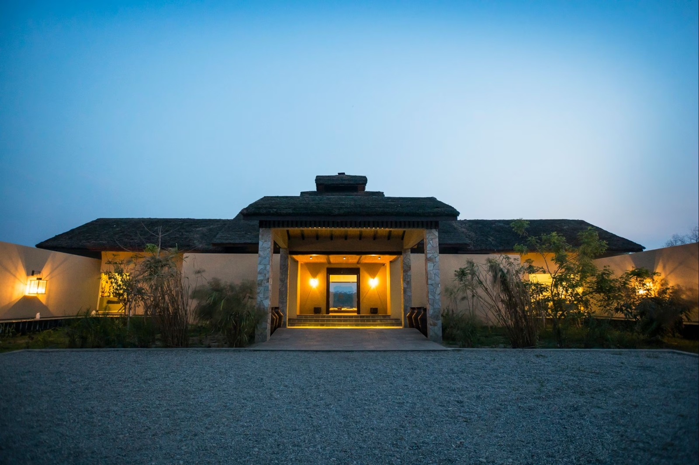
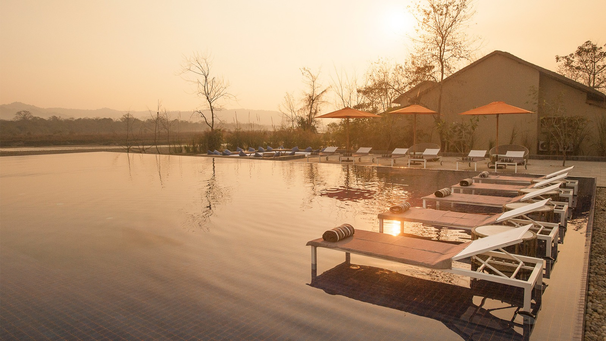